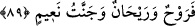

durumunu açıklamak üzere bir başlangıçtır. Yâni, vefat eden kimse Arş-ı ilâhiye yakın
olanlardan ise ki onlar, üç sınıf insanın en üstün olanlarıdır.
89. Ona rahatlık, güzel rızık ve Naîm cenneti vardır.
“Ona rahatlık,” yâni onun için bir istirâhat vardır. Ravh kelimesi ruh şeklinde de
okunmuştur. “Rahmet” diye tefsir edilmiştir. Çünkü o, rahmete kavuşmuş olan kimsenin
ebedî hayatına sebeptir. Ruh’u, rahmet yerine kullanmak istiâredir. Ruh, “ölümü
olmayan sonsuz hayat” diye de tefsir edilmiştir.
Ruh, bir çok mânâya gelir. Ravh, ölüm sırasında ölüm melekleri tarafından alınan
cesedlerin rûhu, demektir. Nefsin hayatı ondadır. Cebrâil (a.s.)’a da ruh denir. Çünkü
kalblere hayat veren âyetleri ve ilâhî mesajları peygamberlere getiren odur. Îsâ (a.s.) da
Rûhullah’tır. Çünkü o, Cebrail’in ruh üflemesinin bir eseridir. Tâzim için Rûhullah
denerek Allah’a izâfe edilmiştir. Allah’ın kelâmına da ruh denir. Çünkü, cehâlet ve
küfrün ölümünden kurtulup hayata kavuşmak demektir. Allah’ın rahmetine de ruh denir.”
“Allah, onların kalplerine îmanı yazmış ve katından bir ruh ile onları
desteklemiştir” (el-Mücâdele 58/22) âyet-i kerîmesinde olduğu gibi. Yâni, onları
rahmetiyle desteklemiştir, demektir. Ruh’a rızık da denir. Çünkü ruh, cesedlerin
hayatıdır.
Kamus’ta şöyle denilmiştir: Ruh, içinde ruh olan her şey, nefislerin kendisiyle hayat
bulduğu şey demektir. Ravh şeklinde okunursa rahat, rahmet, rüzgarın en güzeli, rûhânî
ve güzel yer demektir. Râhâni ise içinde ruh olan, ruhlu demektir.
el-Milel ve’n-nihâl adlı kitapta rûhânî kelimesi ruh kökünden, ravhânî kelimesi ise
ravh kökünden alınmış olup mânâ bakımından bir birine yakındır. Ruh sanki cevher,
ravh de onun özel bir durumudur. Reyhân kelimesi ise rızık veya koklanan bir şey
anlamındadır.
Ebu’l-Âliye’den rivayete göre, mukarrebûn/arş-ı ilahi yakınları, kendilerine cennetin
bazı reyhânından getirilip koklamadıkça dünyadan hiç biri ayrılmaz. Onu kokladıktan
sonra rûhu alınır.
Zeccâc demiştir ki; âyette geçen reyhân, cennet halkının selamlanmasıdır. “Ve naîm
cenneti vardır.” Yâni nimet sâhibi cennet vardır. Buradaki izâfet, cennet ile nimetin
birbirine en yakın benzerliğinden dolayıdır.
Din büyüklerinden biri demiştir ki: Ruh ve reyhan hem dünyada hem de âhirettedir.
Ruh dünyada, reyhân âhirettedir. Ruh; mü’min kulun kalbini kendisine yönlendiren
şeydir, böylece hak ve bâtılı tanır. O zaman Allah o kimsenin ilmini genişletir ve
böylece görme kudreti orada kendisine yer bulur. O vakit Allah onun gözünü açar,
böylece ihsân nûrunu görür. Kulağını açar, ezelî öğüdü işitir. Temiz kılar, kul onun